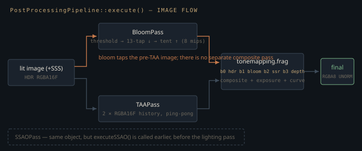

Monograph · Tree · ← Module hub · Post stack
deferred
Post stack
Bloom, TAA, tonemap orchestration.
Four passes, one of which is not post
`PostProcessingPipeline` owns bloom, TAA, SSAO and tonemapping, but only three of them run inside `execute()`. SSAO has a separate entry point, scheduled by `DeferredRenderer` as a compute pass ahead of lighting. The comment there states the intent — occlusion should modulate the ambient term while lighting is still being computed, rather than being multiplied into a finished image where it would darken direct light and emissives too.
// SSAO runs before lighting so its output can modulate ambient occlusionohao/render/deferred/post_processing_pipeline.cpp:73The SSAO view reaches `DeferredLightingPass`, is written into set 0 binding 10, and raises flag bit 1:
if (m_ssaoView != VK_NULL_HANDLE) m_params.flags |= 2; // SSAOohao/render/deferred/deferred_lighting_pass.cpp:178and `deferred_lighting.frag` samples it there, upsampling the half-resolution image against each pixel's distance from the camera, only when that bit is set:
const float ssao = (pc.flags & 2u) != 0u ? ssaoAt(ivec2(gl_FragCoord.xy), distance(fragPos, pc.cameraPos)) : 1.0;shaders/core/deferred_lighting.frag:346It multiplies the IBL terms (and the constant ambient, in a frame without RT GI or an environment) on top of the baked `ao` from the albedo G-buffer's alpha — which the G-buffer pass filled from the R channel of the material's glTF occlusion texture (1 without one; a metallicRoughness map's R channel is unused by glTF and never read as occlusion):
if (occlusionTexIdx < 4096u) ao = texture(textures[nonuniformEXT(occlusionTexIdx)], fragTexCoord).r;shaders/includes/scene/gbuffer_body.glsl:180— and leaves direct light and RT GI alone. The pass itself, its noise and its upsample are the SSAO unit's subject. Each frame `DeferredRenderer` hands the pipeline SSAO's inputs, the G-buffer's position and normal and the unjittered camera:
m_postProcessing->setSSAOInputs(m_gbufferPass->getPositionView(), m_gbufferPass->getNormalView(),ohao/render/deferred/deferred_renderer.cpp:297The three passes that do run inside `execute()` form a chain with one asymmetry worth spotting up front: TAA rebinds the working image for whatever comes next, bloom does not.
if (taaOutput != VK_NULL_HANDLE) currentInput = taaOutput;ohao/render/deferred/post_processing_pipeline.cpp:102Bloom is fired at the raw HDR input and its result is left in a texture; the composite happens later, inside the tonemap fragment shader, as a second sampler. Bloom therefore always sees the pre-TAA frame, and no composite pass exists.

The bloom chain and its one anti-firefly trick
The mip chain is a single `R16G16B16A16_SFLOAT` image with per-level views and one framebuffer per level, mip 0 at full resolution, capped at eight levels. The views and framebuffers are one unit: `onResize` destroys and rebuilds them together with the image, so the chain always matches the current extent.
destroyMipChain(); // also destroys the per-mip framebuffersohao/render/deferred/bloom_pass.cpp:110m_mipLevels = static_cast<uint32_t>(std::floor(std::log2(std::max(m_width, m_height)))) + 1;ohao/render/deferred/bloom_pass.cpp:122At 1920×1080 the log2 term wants eleven levels and `MAX_MIP_LEVELS` clamps it to eight, so the smallest mip is 15×8, not 1×1 — the widest bloom skirt is bounded by that clamp rather than by the resolution.
Extraction is a soft-knee threshold on Rec. 709 luminance. With $L$ the luminance, $T$ the threshold and $k$ the soft-threshold width:
$c$ is the fraction of the pixel's colour kept; both $10^{-4}$ are the same literal, guarding each denominator against zero. The square on $s$ makes the knee $C^1$ at $L=T-k$, so a light brightening past the threshold ramps into bloom instead of popping.
Where the branches meet is not where a soft knee normally puts it. At $L=T+k$ the numerator is $2k$, so the clamped ratio is 1 and $s=1$, while the linear branch is only $k$ — for the two to meet there the square has to be multiplied back by $k$. The shader divides, squares, and never multiplies back:
soft = clamp(soft / (2.0 * params.softThreshold + 0.0001), 0.0, 1.0);shaders/postprocess/bloom_threshold.frag:26$s$ pins at 1 from $L=T+k$ upward, so the `max` stays on the soft branch until $L-T>1$ — and since nothing the build compiles moves either knob, the shipped $T=1$, $k=0.5$ put the handover at $L=2$, not $L=1.5$.
float contribution = max(soft, luminance - params.threshold);shaders/postprocess/bloom_threshold.frag:30float m_softThreshold{0.5f};ohao/render/deferred/bloom_pass.hpp:94Two consequences of the missing factor. Across the knee the extraction is $1/k$ times what the $k$-scaled curve gives — double, here. And between $T+k$ and $T+1$, $c=1/L$ exactly, so every pixel in that band is renormalised to unit luminance instead of being scaled by its excess over the threshold.
The extracted colour is then clamped to a luminance of `maxLuminance` (4, before exposure): a brighter source blooms as if it were that bright.
if (brightLuminance > params.maxLuminance) bright *= params.maxLuminance / brightLuminance;shaders/postprocess/bloom_threshold.frag:38static constexpr float kBloomMaxLuminance = 4.0f;ohao/render/deferred/bloom_pass.hpp:32A light's emitter mesh is as bright as the light: `I / (pi r^2)`, tens of thousands for a small bulb. The Karis average below cannot stop that, because it renormalises within each 4-tap group: a sphere many pixels wide is bright in every tap, and its average stays at full radiance. Unclamped, the upsample's additive chain (mip weights 1, ½, ¼, … down to 1×1) spread that energy over a third to a half of the frame. Clamped, a light glares like any other bright surface, around itself. Lighting never reads the bloom chain, so no light energy changes; pixels below the clamp extract exactly as before.
Downsampling is the 13-tap Jimenez/CoD filter, and the first step of the chain — and only the first — takes the *partial* Karis average. The thirteen taps are first collapsed into the filter's five 4-tap box groups; the weight $1/(\max(r,g,b)+1)$ is then evaluated once per group, never per tap:
return 1.0 / (max(max(c.r, c.g), c.b) + 1.0);shaders/postprocess/bloom_downsample.frag:21Each group's fixed share (0.125 for the four corner quads, 0.5 for the centre quad) is scaled by its Karis weight, and the sum is divided by the total weight — without that renormalisation the whole mip would darken in proportion to how bright it is:
(kw1 + kw2 + kw3 + kw4 + kw5);shaders/postprocess/bloom_downsample.frag:84(i == 1) ? 1.0f : 0.0f // First downsample uses Karis average (anti-firefly)ohao/render/deferred/bloom_pass.cpp:640That flag is the whole firefly defence. One over-bright pixel surviving into mip 1 unweighted becomes a pulsing blob once it is spread over the upper mips; the group weight is a tone-mapped average that caps the influence of whichever quad contains it. Applying it on every level would keep suppressing energy that has already been averaged down, so the flag is deliberately false from mip 2 up.
The upsample walks back down the chain with a 9-tap tent, and it does not read and re-write: the destination is a colour attachment with additive `ONE/ONE` blending and `LOAD_OP_LOAD`, so each level accumulates in place.
colorAttachment.loadOp = VK_ATTACHMENT_LOAD_OP_LOAD;ohao/render/deferred/bloom_pass.cpp:270Every step of the chain is its own render pass that samples the mip the previous render pass just wrote, and nothing else orders them: post-processing runs outside the render graph. The render passes' own external dependencies are the only barrier, so they must make earlier colour-attachment writes visible to fragment-shader reads. Until sub-project 4 step 1 the single dependency guarded only earlier *reads* against this pass's writes; the implicit end-of-pass dependency makes no write visible, so each mip was read racing its writer and bloom came out different run to run. Bloom, TAA and the tonemap pass now share `RenderPassBase::sampledColorPassDependencies()`:
deps[0].srcAccessMask = VK_ACCESS_COLOR_ATTACHMENT_WRITE_BIT | VK_ACCESS_SHADER_WRITE_BIT;ohao/render/deferred/render_pass_base.cpp:151Two consequences. Mip 0 ends up holding the *thresholded* full-resolution image plus the blurred chain, and the tonemap adds that on top of the untouched HDR at unit strength — above-threshold energy is counted roughly twice, not redistributed. And `setBloomIntensity()` is inert: it reaches `BloomPass::m_intensity`, which is pushed to the threshold shader in a field that shader declares and never reads, while the strength the tonemap uses is a literal — raised only when the chain actually ran this frame:
if (m_bloomPass->didExecute()) bloomStrength = 1.0f;ohao/render/deferred/post_processing_pipeline.cpp:92`BloomPass::execute` validates its pipelines, render passes and framebuffers before recording and sets `didExecute()` only after the upsample. When it reports false the strength stays 0 and the tonemap's bloom binding is filled with the HDR input instead of the mip chain, so an image no pass wrote this frame is never sampled.
Ping-pong history, swapped before it is read
`TAAPass` keeps two `R16G16B16A16_SFLOAT` history images and an index naming the one written most recently. `execute()` flips that index *first*:
m_currentHistoryIndex = 1 - m_currentHistoryIndex;ohao/render/deferred/taa_pass.cpp:73then renders into the framebuffer at the new index and writes this frame slot's descriptor set to sample the other image — the one the previous frame resolved into:
renderPassInfo.framebuffer = m_framebuffers[outputIndex];ohao/render/deferred/taa_pass.cpp:85writeDescriptorSet(frameIndex, 1 - outputIndex);ohao/render/deferred/taa_pass.cpp:77Because the flip happens before recording, `getOutputView()` — which reads the current index — names the image written *this* frame, and the tonemap that follows picks up the fresh resolve rather than last frame's:
[[nodiscard]] VkImageView getOutputView() const { return m_historyViews[m_currentHistoryIndex]; }ohao/render/deferred/taa_pass.hpp:38The render pass clears its attachment on load. That is safe only because the attachment and the sampled history are never the same image: the cleared one holds the resolve from two frames back, which nothing reads again.
colorAttachment.loadOp = VK_ATTACHMENT_LOAD_OP_CLEAR;ohao/render/deferred/taa_pass.cpp:380The history binding alternates every frame, so the set must be rewritten every frame — which is why there is one set per frame in flight, written at record time for the slot whose fence was just waited. Rewriting a single shared set would modify it while up to two submitted frames still read it.
Fresh history images hold nothing. `createHistoryBuffers()` drops `m_historyValid`, and the next `execute()` zeroes both images with `vkCmdClearColorImage`, leaves them `SHADER_READ_ONLY_OPTIMAL`, and resolves that one frame with blend weight 0 — the current frame alone — so a resize never fades in from black or from undefined memory:
params.blendFactor = m_historyValid ? m_blendFactor : 0.0f; // no history yet: current frame onlyohao/render/deferred/taa_pass.cpp:103A temporal reset (`resetHistory()`) takes the same path. Nothing idles the device first, so frames still in flight may be writing one history image or sampling the other when the clear is recorded; the clear's barrier names their stages (colour attachment output, fragment shader) as its source, and queue order makes it wait for them.
Every feature toggle defaults to off except tonemapping, and the header says why in a comment — "disabled by default for stability". The callers that want the full stack switch bloom, TAA and SSAO on themselves: `model_viewer`'s deferred branch, the `ohao_game` windowed host, and the engine test that resizes a deferred renderer under the validation layer. The shared capture procedure behind `ohao run --render` and `render.capture` sets each of the three on or off per request, from its `post` list. Two other call sites exist and neither is compiled: `renderer_pipeline_tests.cpp` is named by no `CMakeLists.txt` in the tree, and the pybind11 module sits behind an option that defaults off.
pp->setTAAEnabled(true);examples/ohao_game.cpp:128option(BUILD_PYTHON_BINDINGS "Build Python bindings for physics testing" OFF)CMakeLists.txt:108What the resolve shader does when the plumbing is right
The resolve shader itself is a competent modern resolve. History is fetched with a 4-tap Catmull-Rom approximation rather than plain bilinear — bilinear reprojection re-blurs the history every frame and the softness compounds — with the result floored at zero to kill the ringing Catmull-Rom's negative lobe produces around bright edges.
Rejection is variance clipping in YCoCg. The moments are taken over the nine samples $c_i$ of the 3×3 window centred on the current pixel — the pixel being filtered is inside its own box — converted so luma and chroma get independent bounds:
vec3 sigma = sqrt(max(m2 - m1 * m1, vec3(0.0)));shaders/postprocess/taa_resolve.frag:135$\gamma$ is 1.0, hard-coded — one standard deviation, a tight box favouring responsiveness over stability. History outside it is *clipped* along the ray from the box centre rather than clamped per channel, which moves the sample without shifting its hue; off-screen reprojection falls back to the current frame outright.
The blend then leans on motion: `blend = mix(blendFactor, 0.5, clamp(|v| · motionScale, 0, 1))` with `blendFactor` 0.9 and `motionScale` 100, so a hundredth of a UV of per-frame motion saturates the weight and halves the history's influence.
float blend = mix(params.blendFactor, 0.5, motionWeight);shaders/postprocess/taa_resolve.frag:151One knob is decorative. `TAAParams::flags` documents bit 0 as motion vectors and bit 1 as variance clipping. Bit 1 is raised whenever `m_useVarianceClipping` is set, which it is by default; bit 0 only when a velocity view has actually been bound:
if (m_velocityView != VK_NULL_HANDLE) params.flags |= 1;ohao/render/deferred/taa_pass.cpp:106The shader tests bit 0 and nothing else — clipping is unconditional, and `setUseVarianceClipping(false)` changes nothing.
if ((params.flags & 1u) != 0u) {shaders/postprocess/taa_resolve.frag:98Jitter is a 16-frame Halton (2, 3) sequence centred on zero and divided by the render resolution. `TAAPass` generates it, but the resolve shader is never told what it is: `TAAParams` carries only texel size, blend factor, motion scale and flags. Its only live consumer is `DeferredRenderer`, which picks the sample by the frames since the last temporal reset (so all sixteen are reached, and frame *k* after a reset jitters the same way in every run) and adds it straight into the projection's third column:
jitteredProj[2][0] += jitter.x;ohao/render/deferred/deferred_renderer.cpp:263Adding $j$ there shifts NDC x by $-j$ at every depth, and NDC spans the framebuffer over two units, so the realised sweep is $\pm\tfrac14$ pixel — half the $\pm\tfrac12$ that covers a full pixel footprint. The sequence is well stratified; it just never reaches the pixel edges.
The two matrices that do have to agree do not. The G-buffer rasterises the current frame through `jitteredProj`, but the matrix saved for next frame's motion vectors is the unjittered one:
m_prevViewProj = m_proj * m_view; // unjittered: next frame's velocity carries its own jitterohao/render/deferred/deferred_renderer.cpp:696so the velocity a fragment writes is the true screen motion plus that frame's own jitter:
outVelocity = (currentNDC - prevNDC) * 0.5;shaders/includes/scene/gbuffer_body.glsl:106The two positions being differenced are not in the same space, and nothing downstream compensates. A perfectly static camera therefore reports up to a quarter pixel of motion, redirected every frame by the Halton sequence. That is far below the UV magnitude `motionScale` needs to move the blend, so the weight barely notices; the damage is that `historyUV = uv - velocity` reprojects into the wrong texel every frame — the resampling error the Catmull-Rom fetch above exists to keep small.
Five curves, and one that must not be gamma-corrected
The shader composites (HDR + bloom·strength + flash), multiplies by exposure, and switches on an operator index: the Narkowicz ACES fit, extended Reinhard with a hard-coded white point of 4.0, Uncharted 2 with Hable's constants, a Neutral compressor that desaturates only above 0.76, and a Hejl filmic curve. The last emits gamma-space values directly, so the shader skips the final `pow`:
if (params.tonemapOperator != 4u) {shaders/postprocess/tonemapping.frag:123That exception is coupled to the target format:
imageInfo.format = VK_FORMAT_R8G8B8A8_UNORM; // LDR output — shader does manual gamma, no HW sRGBohao/render/deferred/post_processing_pipeline.cpp:321The final image is `_UNORM`, not `_SRGB`, because gamma is applied by hand. Switching it to an sRGB format so the hardware applies the transfer function double-encodes all five operators — and the branch above means the Filmic path would break in a subtly different way from the other four.
Screen-space reflections are not post's business: `SSRPass` resolves them into the lit image before bloom and TAA run, replacing the environment's reflection where its trace hit (the SSR and SSS unit), so bloom blooms them and TAA resolves them like any other lit pixel. The tonemap has two bindings, the frame and bloom:
// Write both bindings: HDR input, bloomohao/render/deferred/post_processing_pipeline.cpp:286The `flashIntensity` push constant — an additive warm-white HDR spike for lightning, placed before the tonemap so the curve compresses it — is wired end to end and has no producer anywhere in the tree.
Contracts
- `setHDRInput*()` only stores a handle; `execute()` writes both tonemap bindings into the set for `frameIndex` at record time, so the input must be set before `execute()` that frame. Post adds nothing for SSR: anything that should appear in the frame is in the lit image by then.
- `setTonemappingEnabled(false)` does not yield an untonemapped LDR image. Bloom and TAA still run, but `m_didExecute` stays false and `DeferredRenderer::getFinalOutput()` falls back to the HDR lighting attachment, discarding both.
- The output image is `R8G8B8A8_UNORM` on purpose. Moving to `_SRGB` must be paired with removing the `pow` in `tonemapping.frag`, and reconciled with the operator-4 branch that already skips it.
- `setBloomIntensity()` and `setUseVarianceClipping()` are stored but never reach the image: bloom strength is a literal in `execute()`, and clipping is unconditional in the shader.
- `setSSAOEnabled(true)` adds the `ssao` compute pass ahead of lighting, which reads it at binding 10 under flag bit 1 and applies it to the ambient and IBL terms only. `setSSAOInputs` must run each frame before the graph executes, or the pass keeps last frame's camera.
- TAA's history is sound — the render target and the sampled history are always different images, and the output is this frame's — but its inputs are not: motion vectors carry the current frame's jitter because `m_prevViewProj` is stored unjittered, and the jitter sweep spans half a pixel. Treat TAA's reprojection as approximate.
Source files
ohao/render/deferred/post_processing_pipeline.cppohao/render/deferred/deferred_lighting_pass.cppshaders/core/deferred_lighting.fragshaders/includes/scene/gbuffer_body.glslohao/render/deferred/deferred_renderer.cppohao/render/deferred/bloom_pass.cppshaders/postprocess/bloom_threshold.fragohao/render/deferred/bloom_pass.hppshaders/postprocess/bloom_downsample.fragohao/render/deferred/render_pass_base.cppohao/render/deferred/taa_pass.cppohao/render/deferred/taa_pass.hppexamples/ohao_game.cppCMakeLists.txtshaders/postprocess/taa_resolve.fragshaders/postprocess/tonemapping.fragohao/render/deferred/post_processing_pipeline.hppParent hub for the full pipeline narrative; this page is the file-level design unit. Sitemap · hover glossary terms anywhere.